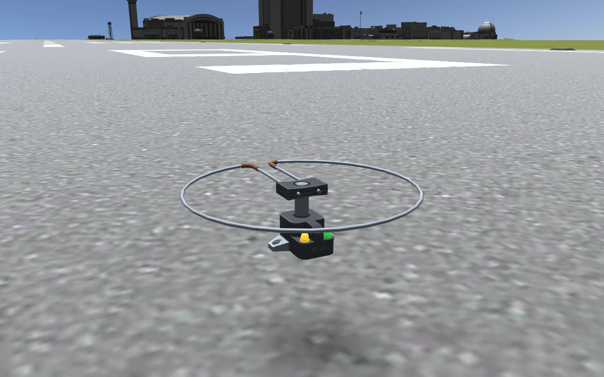
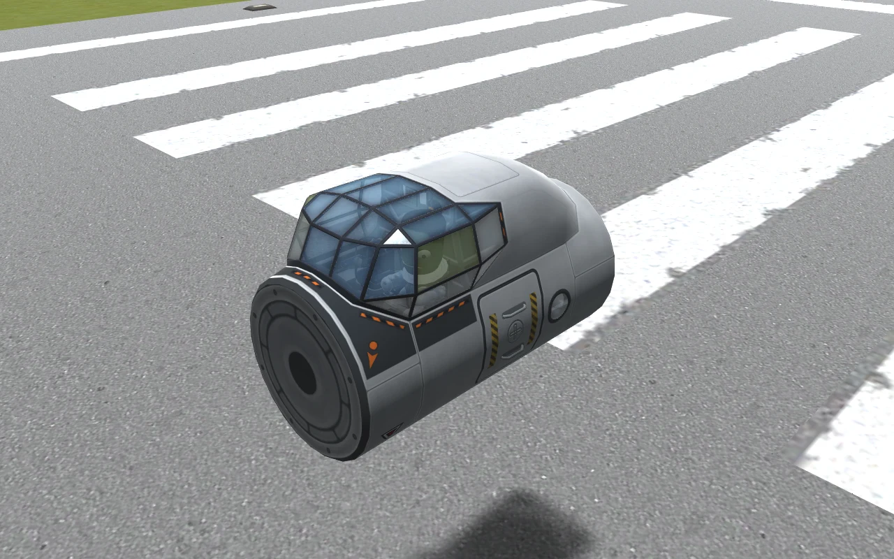
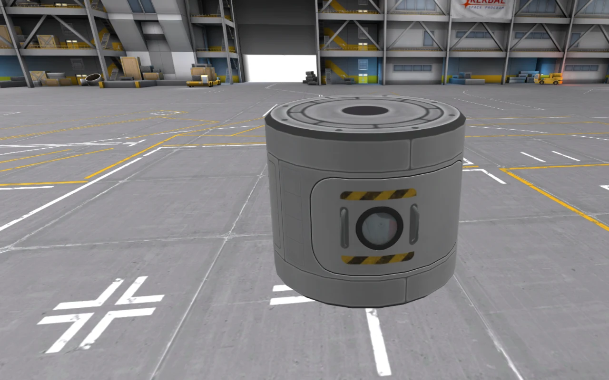
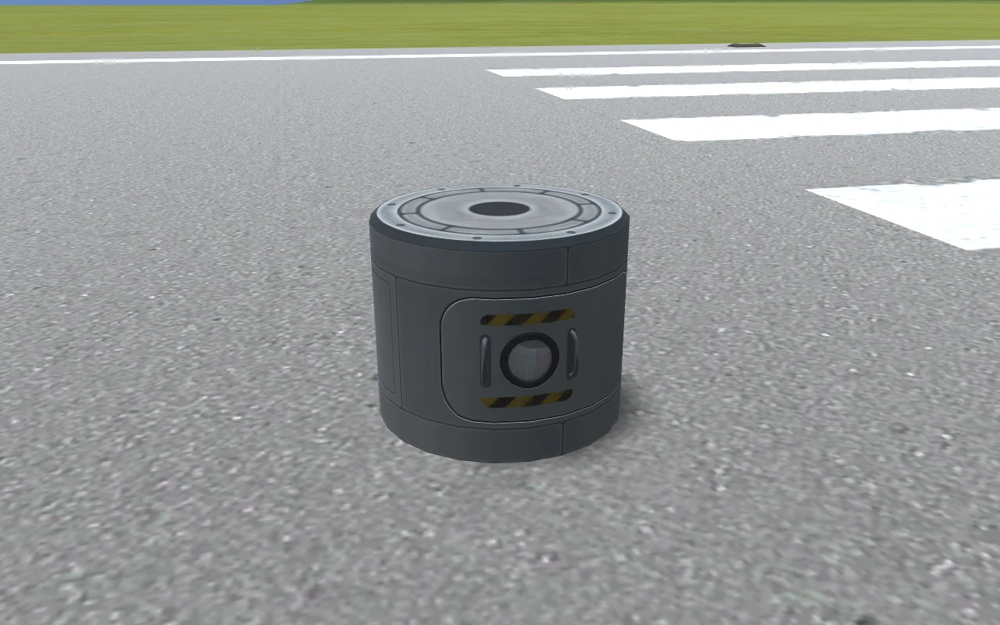

ShineFix
Catalog
Gallery
Evidence
← Back to supported mods
Kerbonov Kn-2 Cockpit Module
Optics verified
Human tested
Version 2:2.0.4
Compatibility evidence
Original screenshot gallery
Parts
EP-63 VHF Transceiver

Kn-2 Cockpit

Kn-7 Cockpit
KPM-1 Small Inline Passenger Compartment

